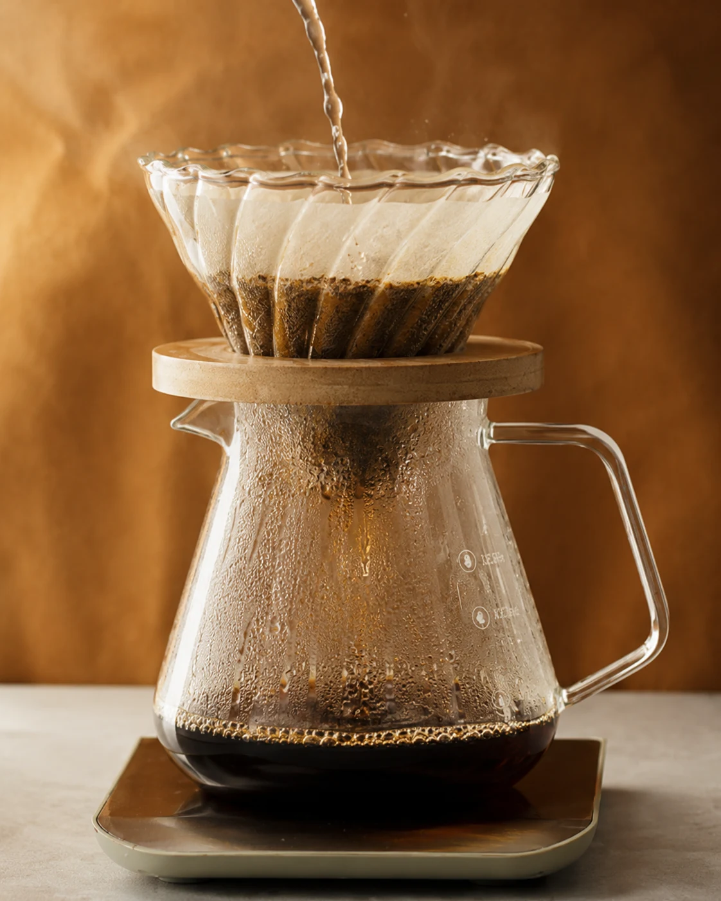

Mass-conserving porous-bed simulator
Filter Coffee Process Simulator
03 / Output
Simulation Output
Ready.

BREW VISUAL
Cup accumulation
0.0 g
Estimated liquid collected in the server
Water balance: --
Solids balance: --
Cup <= input: --
Nonnegative: --
Time series
Process dynamics
Total bed water with mobile and immobile components; extraction yield uses the right axis
Water · g
EY · %
Cup water
Bed water
Mobile pore
Immobile retained
Pooled
Extraction yield
Pour window